|
 |
 |
Puntos de
Inflexión Ecológica
- Cómo funcionan?
- Transformando círculos viciosos a círculos virtuosos
- Ingredientes para el éxito
- Elaboren sus propios Puntos de Inflexión Ecológica
Historias por Región
Historias por Tema
- Agricultura
- Agua y Cuencas
- Bosques
- Ecosistemas Urbanos
- Educación
- Energía
- Negocios
- Pesquerías
- Salud Pública
Videos Cortos
- Salvando un arrecife coral y una pesquería
(Filipinas) - Revitalizando vecindades urbanas con jardines comunitarios
(Nueva York) - Revirtiendo la deforestación tropical con bosques comunitarios
(Thailandia) - Rellenando aguas subterráneas con captación pluvial
(Rajastán, India) - Escapando la trampa de pesticidas
(India)
Explicando el Éxito
- Salvando un arrecife coral y una pesquería
(Filipinas) - Revitalizando vecindades urbanas con jardines comunitarios
(Nueva York) - Revirtiendo la deforestación tropical con bosques comunitarios
(Thailandia) - Rellenando aguas subterráneas con captación pluvial
(Rajastán, India) - Escapando la trampa de pesticidas
(India)

Ecología Humana: Presenta los principios de la ecología humana que sirven de fundamento a los Puntos de Inflexión Ecológica
EUA - Hawai (Oahu) - Puntos de Inflexión Ecológica en Bahía Hanauma
- Breve: An idyllic bay goes through two cycles of overuse and preservation.
- Lea la historia detallada
- Fotos tomadas por Amanda Suutari - Todas las fotos están disponibles para descargarse gratis; favor de atribuir a la fotógrafa y al sitio de Internet.
- Pulse sobre la foto para ver los detalles.

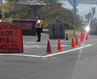
Entrance

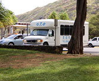
Commercial parking lot

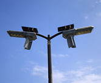
Parking lot lights

Hanauma Bay

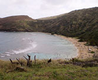
Hanauma Bay

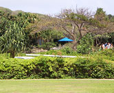
Snack bar

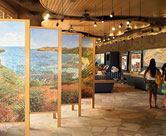
Education center

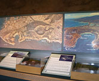
Education center

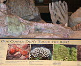
Education center

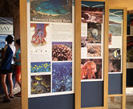
Education center

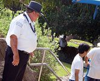
Guards

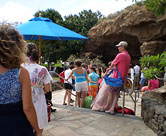
Theater

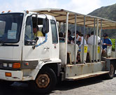
Trolley

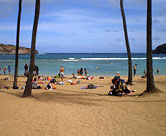
Beach

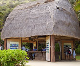
Information kiosk

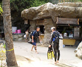
Snorkel rental stand

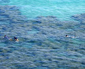
Snorkelers

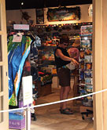
Gift shop